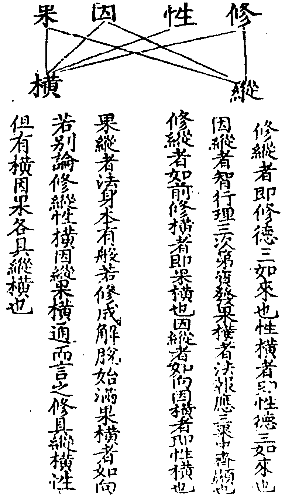
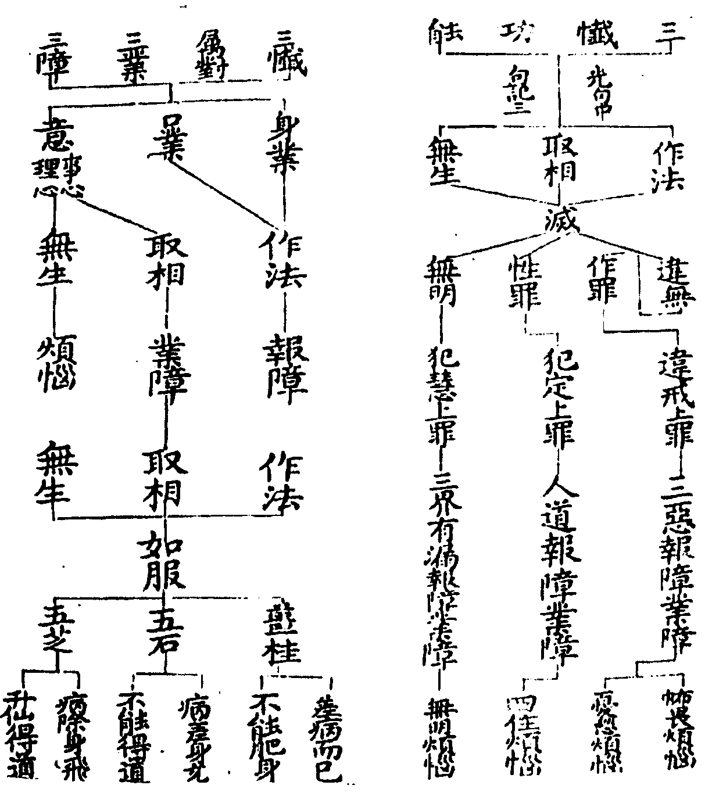
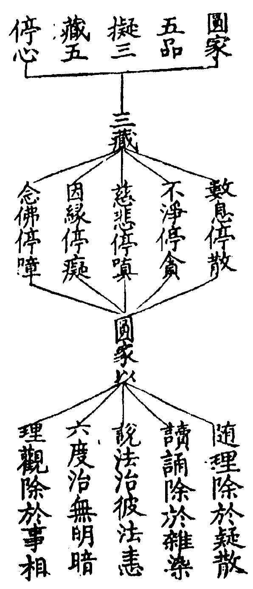
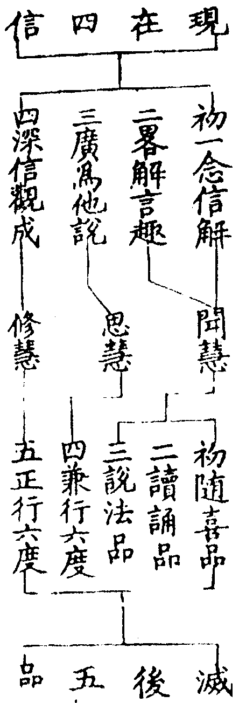

天台四教儀集註卷第九 稼九
二離垢地三發光地四燄慧地五難勝地六現前地七遠行地八不動地九善慧地十法雲地(已上九地地地各斷一品無明證一分中道)。
以正無相入眾生界同於虛空名離垢地光慧信忍習佛之道極淨明生名發光地順無生忍觀一切法名燄慧(地順忍修道三界無明莫不皆空名難勝地上順諸法觀於三世寂滅無二名現前地觀諸煩惱不有不無常向上地念念寂滅名遠行地以)無生觀捨於三界名不動地入於上觀光光佛化無生忍道名善慧地入中道觀受佛職位既同真如亦等法界妙雲普覆名法雲地。
於十地後心用觀更斷一品方入等覺四教義四(十四)云即是邊際智滿入重玄門若望法雲名之為佛望妙覺名金剛心菩薩亦名無垢地菩薩三魔已盡餘有一品死魔在斷無明習也(文)集解云解入百千三昧照一相無相寂滅無為望于妙覺猶有一等比下名覺故名等覺所修觀智純一堅利喻若金剛名金剛心(文)一生補處者猶有一品無明故有一生過此一生即補妙覺之處觀音玄記上(四)云猶儲君之義也(文)妙宗上(卄三)云有惑可斷名有上士(文)。
更破一品無明入妙覺位坐蓮華藏世界七寶菩提樹下大寶華王座現圓滿報身為鈍根菩薩眾轉無量四諦法輪即此佛也。
四教義四(十五)云金剛後心朗然大覺妙智窮源無明習盡名真解脫翛然無累寂而常照名妙覺地(文)藏者包含十方法界悉在中也(文)七寶菩提樹者七寶眾多表無量故大寶華王座者妙玄(玄十二)云或言寂滅道塲七寶華為座身稱華臺千葉上一一菩薩復有百億菩薩如是則有千百億菩薩十方放白毫及分身光白毫入華臺菩薩頂分身光入華葉菩薩頂此名受法王職位窮得諸佛法底而得成佛華臺名報佛華葉上名應佛報應但是相關而已不得相即此是別佛果成相也(文)鈍根菩薩者迷中重故次第修證達通寶所對圓名鈍。
有經論說七地已前名有功用道八地已上名無功用道妙覺位但破一品無明者捴是約教道說。
華嚴云菩薩未至第八地時如人乘舡欲渡大海未至大海多用功力若至八地從大方便近佛智慧無功用心不加功力妙覺位但破一品無明未審據何文說諸文但云斷十二品稱為妙覺也。
有處說初地斷見從二地至六地斷思與羅漢齊者此乃借別教位名名通教位耳。
至六地斷思與羅漢齊者取十度義以第六般若空慧斷惑故也如止觀第六借位中(云云)十度者六度外加願智力方便。
如此流類甚眾須細知當教斷證之位至何位斷何惑證何理徃判諸教諸位無不通達。
略明別教竟。
此教明縱橫者別論不出性橫修縱因縱果橫通論因果各具縱橫性但有橫修具縱橫初性橫修縱者妙句九云若但性德三如來是橫修德三如來是縱(前後而得)先法次報後應亦是縱(一性二修)記九云性德之名名通別教別教雖有性德之語三皆在性而不互融故成別義若三在修前後而得道理成縱又妙宗云別人不知本覺之性具染惡德是故染惡非二佛性別修緣了顯本法身(修縱)亦為不知本覺之性具染惡德不能全性起染惡修乃成理体橫具三法(性橫)次因縱果橫者光明記一云行智理三次第資發修時縱也法報應三果中齊顯證時橫也良由此教本有法身為惑所覆故須別作緣了之功相資顯發復由此教性具三法而不相收故使三身橫顯此指修縱只是因縱性橫成於果橫修性因果相對別論也次因果各有縱橫者文句二云別家因時三法縱橫果時三法亦縱橫因縱如向因橫即性橫也果縱如妙玄九云法身本有般若修成解脫始滿果橫亦如向說須知此教因果三法次第即縱各異即橫妙玄五云資成在前觀照居次真性在後此三竪別縱非大乘此三並異橫非大乘次性但有橫修具縱橫者性橫如上性中三法未論起修無前後故則無縱義凡言修者通因通果因果既具各有縱橫修任運有也。

次明圓教者。
四教義一(三)云圓以不偏為義此教明不思議因緣二諦中道事理具足不別但化最上利根之人故名圓教也(文)又云圓教詮因緣即中道不思議佛性涅槃之理菩薩稟此教門理雖非淺非深而證者不無淺深之位今明入道亦具四門而諸大乘經意多用非空非有門以明位也(文)釋籤五(二十)云圓教菩薩以界外滅諦為初門(文)。
圓名圓妙圓滿圓足圓頓故名圓教也(此釋圓名)。
三諦圓融不可思議名圓妙三相即無有缺減名圓滿圓見事理一念具足名圓足體非漸成故名圓頓。
圓伏五住圓常正信圓斷五住圓行一行一切行圓位位位相攝妙用華嚴故云自在四悉普益故云建立如止觀一(三)。
一代教中唯除鹿苑顯露無圓諸大乘經凡說圓法皆佛境界也不共三乘位次者揀異別教不共二乘今圓是佛乘故不共三乘也。
法華中開示悟入四字對圓教住行向地此四十位華嚴云初發心時便成正覺所有慧身不由他悟清淨妙法身湛然應一切此明圓四十二位維摩經云薝蔔林中不嗅餘香入此室者唯聞諸佛功德之香又云入不二法門般若明最上乘涅槃明一心五行又經云有人入大海浴已用一初諸河之水又娑伽羅龍澍車軸雨唯大海能受餘地不堪又擣萬種香為丸若燒一塵具足眾氣如是等類並屬圓教。
開示悟入如前釋初發心者三因性開發即初住位二住已去莫不皆然故結云圓四十二位薝蔔等者薝蔔翻黃花觀眾生品天女訶身子之文淨名空室表常寂光入不二法門者彼經三十一菩薩各說入不二法門已問文殊師利何等是菩薩入不二法門文殊曰如我意者於一切法無言無說無示無識離諸問荅是為入不二法門於是文殊問維摩詰我等各自說已仁者當說何等是菩薩入不二法門時維摩詰默然無言文殊歎曰善哉善哉乃至無有文字語言是真入不二法門(文)須知三十一菩薩乃以有言言於無言文殊乃以無言言於無言淨名乃以無言無言故文殊歎云是真入不二法門也般若明最上乘者金剛經云如來為發最上乘者說涅槃云復有一行是如來行所謂大乘大般涅槃佛性之理又經云者大經云譬如有人在大海浴當知是人已用一切諸河之水輔行一上(卄七)云理具諸法如海水修觀行者如在浴也行攝一切名為已用(文)娑伽羅此翻醎海如來龍王圓頓教雨為上根性不雨三教下類之地首楞嚴云擣萬種香為丸若燒一塵具足眾氣(文)輔行一上(卄七)云理性如丸觀行如燒諸法頓發名具眾氣(文)。
今且依法華纓絡略明位次有八一五品弟子位(外凡出法華經)二十信位(內凡)三十住位(聖初)四十行五十廻向六十地七等覺(是因位末)八妙覺(是果位)。
法華但有五品六根瓔珞具明五十二位妙樂一一(四)云若云圓位(六)即亦足何須更列四十二耶以分真位長故借別位分其品秩(文)或者據此謂圓教本無位次但借別顯圓然妙樂意以五十二位在經論中多被別人祖師用釋圓位故云借耳又有云五十二位名雖在別圓亦同用以分淺深豈可圓教全無位次大品四十二字華嚴初住八相法華五品六根皆圓位義也故曰顯一理則始終無二存諸教則因果歷然既稟教修行安得無位耶又揀諸文開合有四一開前合後如大經三十三天(住行向為三十地等妙為三)二合前開後如仁王十四般若(合三十心為三十地為十等覺為一總十四忍轉入佛心名之為智)三前後俱開如大品四十二字(對四十二位)四前後俱合如法華開示悟入及遊四方(對四十位)妙宗上(卄三)又楞嚴明位有六十前加三漸次(名字即)及立乾慧地(觀行即)向後地前立四加行并常五十二位共成六十。
初五品位者一隨喜品經云若聞是經而不毀訾起隨喜心問隨喜何法荅妙法妙法者即是心也妙心體具如如意珠心佛及眾生是三無差別此心即空即假即中。
文句說隨順事理無二無別喜是慶己慶人(文)妙樂十(十三)云事理祇是權實異名了此權實即非權實故無二無別即隨順開權顯實之事理也言己人者理有事故故能慶人事有理故故能自慶又不二而二故慶己他二而不二了非己他妙玄五(二)云若人宿植深厚或值善知識或從經卷圓聞妙理謂一法一切法(假)一切法一法(空)非一非一切(中)不可思議起圓信解一心中具十法界如一微塵有大千經卷欲開此心而修圓行圓行者一行一切行謂十法成乘十心成就其心念念悉與諸波羅密相應是名圓教初隨喜品位(文)妙法即是心者指要鈔上(四)云經家釋經題法字約此三法各具三千互具互融方名妙法然雖諸法彼彼各具若為觀體必須的指心法三千起信論云所言法者謂眾生心妙心體具者止觀五(十三)云一心具十法界一法界又具十法界十法界具百法界一界具三十種世間百法界即具三千種世間此三千法在一念心若無心而已介爾有心三千具足亦不言一心在前一切法在後亦不言一切法在前一心在後輔行五中(七)云言無心而已者顯心不無言介爾者謂剎那心無間相續未曾斷絕纔一剎那三千具足若具三千即具三德又介爾者介者弱也謂細念也但異無心三千具足(文)如如意珠止觀五(十七)云如如意珠天上勝寶狀如芥粟有大功能淨妙五欲七寶琳琅非內畜非外入不謀前後不擇多少不作觕妙稱意豐儉降雨穰穰不添不盡蓋是色法尚能如此况心神靈妙寧不具一切法耶(文)記中表法約理解釋須者尋之心佛眾生三無差別者釋籤二云當知三法即是不思議廣大法界應了此理具足佛法及眾生法雖復具足心性冥妙不一不多又眾生及佛不出於心故無差別名心法妙是故結歸三無差別方名為妙十義書云以我一念心法及一切眾生十方諸佛各各論於事造人人說於理具而皆互具互攝方名三無差別又指要云是則三法各具二造方無差別此心即空假中拾遺記下八云三觀之首皆言即者指一念心即三諦故言即空者非即偏空乃觀一念即圓空也此空能破三諦相着故云一空一切空(三觀悉彰破相之用也)言即假者非即偏假乃觀一念即妙假也此假能立三諦之法故云一假一切假(三觀悉彰立法之功也)言即中者非即但中蓋指一念即具德中此中能妙三諦之法故云一中一切中(三觀悉是絕待之体也)。
常境無相常智無緣。
此境智冥一。
無緣而緣無非三觀無相而相三諦宛然。
而言境智也止觀第一常境常智後復云以無緣智緣無相境以無相境相無緣智智境冥一而言境智輔行釋云實相無相無相亦無實智無緣無緣亦絕何者境雖無相常為智緣智雖無緣常為境發智雖緣境稱境無相境雖發智令智無緣無緣而緣照境無間故云以無緣智緣無相境無相而相發智宛然故云以無相境相無緣智。
初心知此慶己慶人故名隨喜。
此結成隨喜也五品初心知此妙心體具事理三千境觀之法慶己有智慧慶人有慈悲。
內以三觀觀三諦境。
大意云三諦三觀三非三三一一三無所寄諦觀名別體復同是故能所二非二。
外以五悔勤加精進助成理解。
止觀七云唯法華別約六時五悔重作方便(光約四種三昧相對而說不可以光明弥陀亦論五悔為妨)修懺要旨云所以悉稱悔者蓋皆能滅罪故也勸請則滅波旬請佛入滅之罪隨喜則滅嫉他修善之愆回向則滅倒求三界之心發願則滅修行退志之過(文)輔行二上八云於法無染曰精念念趣求曰進(文)助成理解一徃分之五悔為事名助諦觀為理解名正。
言五悔者有二一理二事。
止觀二云事懺懺苦道業道理懺懺煩惱道理事不出三種懺法理謂無生妙懺事謂取相作法光明文句三(十四)云行者應知三種懺法無生是主二為助緣灰汁皂角助於清水若缺妙觀不名大乘便同外道無益苦行須近善師學懺悔處及懺悔法方可行於道塲事儀故於諸事皆用妙觀照而導之使作法等皆順實理悉為佛因又云正助二懺修逐根緣自有一向修於正道直登圓住或內外凡自有一向修於助道如南嶽立有相安樂行不入三昧但誦持故亦能得見上妙色像此二隨根修入不同若悟理時必兩捨也自有正助相兼而修或先正後助或先助後正或同時而修今之所立意在同修耳懺悔名光明文句中(初)云懺者首也悔者伏也不逆為伏順從為首又懺名白法悔名黑法白法須尚黑法須捨又懺名修來悔名改徃又懺名披陳眾失悔名斷相續心又懺者名慚悔者名愧慚則慚天愧則愧人(文)光明記三(七)云然懺悔二字乃雙舉二音梵語懺摩華言悔過以由悔過是首伏等五種之義今既華梵二音並列是故大師以首釋懺以伏釋悔乃至慚愧對釋懺悔欲令稟者修首伏行及慚愧等斯是善巧說法之相故不可以華梵詁訓而為責也(文)懺悔處光明文句引普賢觀是名大懺悔約中道為處也名莊嚴懺悔約俗為處也名無罪相懺悔約空為處也若三種差別者此是歷別論處爾即一而三即三而一此圓妙懺悔也記云若於三諦歷別而解乃次第觀非今妙觀其妙觀者空即三諦假中亦然名即一而三三諦俱空假中亦然名即三而一行者應知三一相即為彰懺悔處絕乎思議若以此語增於言想則永不識懺悔處也然懺悔處誰人不具何法暫非但為本迷滿目不見全心不知是故經云於十力前不識諸佛勸求覔者須親善師須資妙教勤[聽-王]勤聞審讀審思若其然者必於能詮識所詮體翛然慮外無以狀名斯乃所求法性道理此理至妙為懺法所依故名為處若依此處而立行門方得名為大乘懺也又懺之所依如噐淳朴非砧不成以何為砧謂一實相無別實相即罪相是得此處者罪無不滅德無不顯(文)懺悔法要旨云一作法懺謂身口所作一依法度二取相懺謂定心運想相起為期三無生懺謂了我心自空罪福無主觀業實相見罪本源法界圓融真如清淨法雖三種行在一時光明記云此三種懺同時而修無生是正二為助緣斯乃正助一合而行如膏益明證理彌速也又須了知大乘三懺後一雖可獨修不進須假前二前二不可暫離無生得此意已方可說行三種懺法。

光明記三(八)云端坐者身儀也禪波羅密具出坐法須者冝檢念實相者懺罪觀也實相無相當云何念必以無念之念念無相之相以無相之相相無念之念若於念外別有實相實相之外別有於念則非此經念實相也眾罪等者滅罪所以也前念實相蓋體修惡即是性惡性惡照明斯為慧日修惡體虛如消霜露(文)。
言事懺者晝夜六時三業清淨對於尊像披陳過罪無始已來至于今身凡所造作殺父殺母殺阿羅漢破和合僧出佛身血邪[婬-壬+(工/山)]偷盜妄言綺語兩舌惡口貪瞋癡等如是五逆十惡及餘一切隨意發露更不覆藏畢故不造新。
晝夜六時等四句明首伏法無始下明首伏辞殺父下明五逆罪(首試)下殺於上也妙樂八引俱舍云五並業障攝約處人除比約人除扇[打-丁+虎](此云黃門勅住反)四身一語業三殺一虛誑一殺生加行(出佛血)無間一刦熟隨罪增苦增八比丘分二(破僧)以為所破僧具如補注釋九(五)光明文句中(三)云人從父母稟身十月懷抱三年鞠養撫念惟惟始能升頭戴髮教方教數始解作人那忽違恩背義而行弒逆天雖大不覆此人地雖厚不載此人此人命終直入地獄(文)十惡中應明殺生釋十惡名如法界次第上(九云云)口有四惡或云五者加無義語發露者要旨(四)云罪根冝露則眾罪皆滅(文)若不發露犯覆藏罪如律中說畢故不造新者斷相續心也已作之罪願乞消除未起之惡更不敢造。
若如是則外障漸除內觀增明如順流舟更加櫓棹豈不速疾到於所止修圓行者亦復如是正觀圓理事行相助豈不速至妙覺彼岸。
若如是等者光明文句中云若純用正懺亦不須助若正道暗昧不明了者修助以助之所謂灰汁澡豆皂莢木槵以助清水爾(文)如順流舟等者光明文句記三(七二)云正解如順水正觀如順風可喻正道能趣妙理篙棹可喻旋禮等善助於風水舟豈不疾(文)。
此斥偏執理性無修無證者謂即心是佛若別修習則成漸次非圓頓行輔行七下(十八)云圓教位次者先明五悔為入位之方他人圓修都無此意將何以為造行之始但云一念即是如來空談舉心無非法界委檢心行全無毫微(文)。
何處天然弥勒自然釋迦。
輔行一下(二十二)引弥勒問經云弥勒昔行菩薩道時但晝夜六時勤修五悔而得菩提(文)弥勒釋迦既是果人由因克故非天然等也唯今天台建立解行了修即性全性起修正助兼行從因至果故清凉國師云撮合衡三觀之玄趣使教合忘言之旨心同諸佛之心不假更看他靣。
若纔聞生死即涅槃煩惱即菩提即心是佛不動便到不加修習便成正覺者十方世界盡是淨土觸向對靣無非覺者。
舉其所執之法須知理雖平等事有迷悟何得便謂即是不加修習凡言即者以顯於離如氷不離水理須融氷義同於離十方世界盡是淨土此是依報論即觸向對靣無非覺者此是正報論即謂三土皆即寂光九界無非佛界理實如然非修莫克故即云。
今雖然即佛此是理即。
妙宗上(十三)云然理即佛貶之極也以其全乏解行證即但有理性自爾即也(文)。
亦是素法身無其莊嚴何關修證者也。
無緣了功德莊嚴法身體素天龍之所忍劣。
我等愚軰纔聞即空便廢修行不知即之所由鼠唧鳥空廣在經論尋之思之。
重斥所計鼠唧鳥空者止觀八(七)云諸位全無謬謂即是猶如鼠唧若言空空如空鳥空(文)輔行八上(十一)云不達諦理謬說即名何異恠鼠作唧唧聲即聲無旨濫擬生死即是涅槃亦如恠鳥作空空聲豈得濫同重空三昧(文)此斥執理廢行之者所謂即之所由意開妙解而立妙行行可廢乎。
二勸請者勸請十方諸如來留身久住濟含識。
輔行七下(十九)云大為二意一者請住於世二者請轉法輪大論(十五)問諸佛之法法應說法何須勸請又若諸佛現見在前請佛可爾今乃不見云何可請荅佛雖必說而不待請請者得福何得不請復次佛法待請為說又眾生雖不面見諸佛諸佛伺甞不見其心聞其所請假令諸佛不聞不見請亦得福何况聞見而無益耶。
三隨喜者隨喜稱讚諸善根。
輔行七下(二十)云佛轉法輪眾生得三益我助彼喜者喜前勸請也過去下種現在重聞得成熟益未曾下種現在成種未來方益故三世益皆因法輪故我隨喜眾生得益要旨云隨他修善喜他得成(文)。
四廻向者所有稱讚善盡廻向菩提。
止觀七(三十)云回眾善向菩提一切賢聖功德廣大我今隨喜福亦廣大眾生無善我以善施施眾生已正向菩提如回聲入角響聞則遠回向為大利(文)輔行七下(卄一)云如回聲入角等者大論三十二云回向者如少物上王如回聲入角問菩薩功德勝於二乘有何奇特荅今此不以功德比之但以隨喜回向心比如巧匠指示倍得價直執斧之人倍用功力直不足言聲聞自行如執斧者菩薩教他而行回向猶如大匠(文)要旨(六)云所謂回事向理回自向他回因向果(文)。
止觀七(三十)云願者誓也如許人物若不分券物則不定施眾生善若不要心或恐退悔加之以誓又無誓願如牛無御不知所趣願來持行將至所在如坯得火堪可盛物二乘生盡故不須願菩薩生生化物須總願別願四弘是總願法藏華嚴所說一一善行陀羅尼皆有別願一切諸願四弘攝[書-曰+皿]故名為總故知一切菩薩凡見諸佛無不發於總願別願。
光明文句中(四)云當知懺悔位長其義極廣云何而言止齊凡夫是故五十校計經齊至等覺皆令懺悔即其義也(文)記三(十三)云從造無間業者上至圓教等覺故云位長位位橫論各有三障煩惱頭數結業流類苦報等差故云義廣古人何為但在凡夫大師本以三昧總持說懺悔位該一且凡聖自然與校計經合實匪尋經作此安布行者知之(文)。
止觀七(三十)云善言妙義與心相會如膏助火是時心觀益明名第二品也讀誦如膏圓觀如火文句八(五)看文為讀不忘為誦信心故受念力故持(文)。
三說法品者經云若有受持讀誦為他人說內解轉勝導利前人化功歸己心倍勝前。
文句八五宣傳為說聖人經書難解須解釋(文)妙玄五(三)云行者內觀轉強外資又著圓解在懷誓願熏動更加說法如實演布說法開導是前人得道全因緣化功歸己十心則三倍轉明是名第三品位(文)止觀七(三十一)云更加說法轉其內解導利前人以曠濟故化功歸己釋籤五云故知以說法力內熏自智令倍清淨為說圓常內心無着故名為淨化功歸己意在於斯問南嶽天台皆云為他損己及止觀中令修三術誡勿領徒又輔行七下(卄六)云早領眾者名成損己益他盖微其如玄文止觀及今說法品皆云說法開導化功歸己耶須知以慈忍無着之心說法則可如云三軌俻足方可宣通如四安樂行方許說法否則不許若南嶽天台所云盖寄自以誡他也如妙樂一云今問弘經者為名利壅己為大悲益物自行暗於妙宗何殊無目而導衣座室誡思之自克問今五品位說法品中化功歸己彼止觀安忍中正於五品令修三術誡勿領徒何耶須知雖於品中令修三術意誡初心為他損己又品位雖說須守觀心若逐外有妨是亦須誡。
妙玄五(三)云上來前熟觀心未遑涉事今正觀稍明即傍兼利物能以少施與虗空法界等使一切法趣檀檀為法界餘五亦如是事相雖少運懷甚大此則理觀為正事行為傍故言兼行布施事福資理則十心彌盛是名第四品位(文)。
五正行六度者經云若人讀誦為他人說復能持戒等謂自行化他事理具足觀心無閡轉勝於前不可比喻。
妙玄五(三)行人圓觀稍熟理事欲融涉事不妨理在理不隔事故具行六度若布施時無二邊取着十法界依正一捨一切捨財身及命無畏等施若持戒時性重譏嫌等無差別五部重輕無所觸犯若行忍時生法寂滅荷負安耐若行精進身心俱淨無間無退若行禪時遊入諸禪靜散無妨若修慧時權實二智究了通達乃至世智治生產業皆與實相不相違背具足解釋佛之知見而於正觀如火益薪此是第五品位(文)釋籤第五(卄六)云事理不二方名正行若取其意但用三戒事六度相皆以實相融今不二無非法界即是其相無畏等施者論有三施謂資生無畏法捨於依正名施資生畧不言法故云等也(文)止觀七(三十一)云正修六度自行化他事理具足心觀無碍轉勝於前不可比喻名第五品也(文)。

四信五品對三慧文句十云初二是聞慧位廣聞廣說是思慧位觀行想成是修慧位自淺之深成六根清淨十信位也又云前三人是聞慧位兼行六度是思慧位正行六度是修慧位。

妙樂十(十二)云何故現在唯四信滅後立五品荅其義既齊四五無別但是滅後加讀誦為第二品耳(文)。
妙玄五八云五品已圓解一實四諦其心念念與法界諸波羅密相應徧體無邪曲偏等倒圓伏枝客根本惑故名伏忍諸教初心無此氣分(文)又十紙云五品之位理雖未顯觀慧已圓具煩惱性能知如來祕密之藏堪為世間作初依止(文)妙玄五(十一)云五品六根為初依十住為二依十行十回向為三依十地等覺為四依(文)釋籤六(三)云四依位者以此四人並能化他故以此位釋於因人功用(文)此約觀行成就五品在十信前若普賢觀品信合說[書-曰+皿]赴機異爾又吾祖位居五品而云獲旋總持者然旋假入空約位竪論雖在六根七信已前約觀橫辨不妨通於五品。
次進六根清淨位即是十信初信斷見惑顯真理與藏教初果通教八人見地別教初住齊證位不退也次從二信至七信斷思惑盡與藏通二佛別教七住齊三界苦集斷盡無餘故仁王云十善菩薩發大心長別三界苦輪海解曰十善者各具十善也若別十信即伏而不斷故定屬圓信。
妙玄五(四)云十信位者初以圓聞能起圓信修於圓行善巧增益令此圓行五倍深明因此圓行得入圓位以善修平等法界即人信心乃至善修無着即入願心是名十信位瓔珞(云)一信有十十信有百百法為一切法之根本也是名圓教鐵輪十信位即是六根清淨圓教似解煖頂忍世第一法普賢觀明無生忍前有十種境界即此位也(文)(普賢釋迦分身多寶四聖及六根清淨共為十種)仁王云者波斯匿王所說偈也十善者仁王疏中(十九)云十信善者有三品上品善鐵輪王化一天下中品善粟散王下品善人中王(文)妙樂十(八)云信信通皆具足十善非謂專以人天不殺盜等用對十信即云長別三界苦輪當知須是斷惑十信(文)釋籤五(卄七)云亦有人云六根清淨名為頓義十善菩薩此是漸義今(文)所引十善菩薩以證六根豈應引漸而證於頓故知二(文)俱頓明矣但仁王經語其初後法華經意論其中間人不見之徒生異見(文)。
然圓人本期不斷見思塵沙意在入住斷無明見佛性然譬如冶鐵觕垢先去非本所期意在成噐噐未成時自然先落雖見先去其人無一念欣心所以者何未遂所期故圓教行人亦復如是雖非本所望自然先落。
此明圓斷之義輔行六上(九)云從初已來三諦圓修與次第義永不相關此論觕惑任運斷處與次第齊(文)又七下(卄四)云五品已能圓伏五住豈至此位別斷見思但是圓修觕惑先斷猶如治鐵觕垢先除(文)別行玄記下(六)云圓譬冶鐵作噐別喻燒金作噐治謂鎔鑄淳朴頓融任運觕垢先落燒謂鍛鍊物體猶堅持要觕塵先去然後融金以除細垢圓觀頓窮法界無異先觀二諦二惑任運先落別觀次第顯中有意先觀二諦故使二惑先除(文)指要鈔下五云圓人始終用絕持智頓亡諸法理果尚亡惑何次第只由此智功力微著故成踈親由踈親故惑落前後名迷厚薄智踈惑厚智親惑薄轉轉明之此乃約智分惑也(文)先達(云)修觀惑智一如功成惑落前後。
永嘉大師云同除四住此處為齊若伏無明三藏則劣即此位也解曰四住者只是見思謂見為一名見一切處住地思惑分三一欲愛住地欲界九品思二色愛住地色界四地各九品思三無色愛住地無色界四地各九品思此之四住三藏佛與六根清淨人同斷故言同除四住也言若伏無明三藏則劣者無明即界外障中道之別惑三藏教止論界內通惑無明名字尚不能知况復伏斷故言三藏則劣也。
永嘉集云然三藏之佛望六根清淨位有齊有劣同除四住此處為齊若伏無明三藏則劣二乘可知此本是妙玄位妙中文永嘉集中引用之耳昔傳唐末五代台教湮沒因錢氏讀永嘉集至此不解問於韶國師國師指為台教中語當問螺溪義寂法師師奏海東盛行遂求於高麗由是觀師賚教部來使始復興焉今稱永嘉蓋有由矣釋籤六(四)云有齊有劣者惑盡處齊觀行聞教是則為劣亦以佛位格者為順教道故也(文)。
天台四教儀集註卷第九